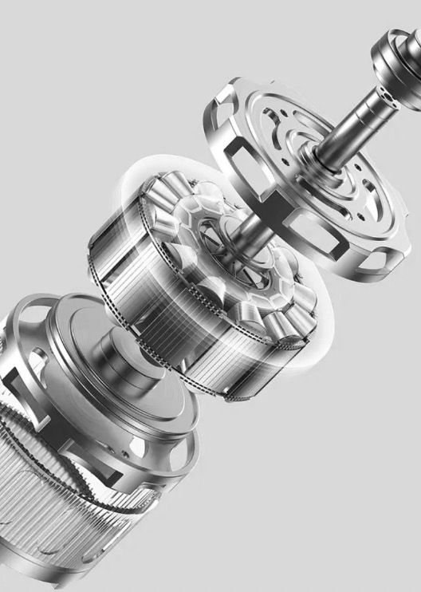
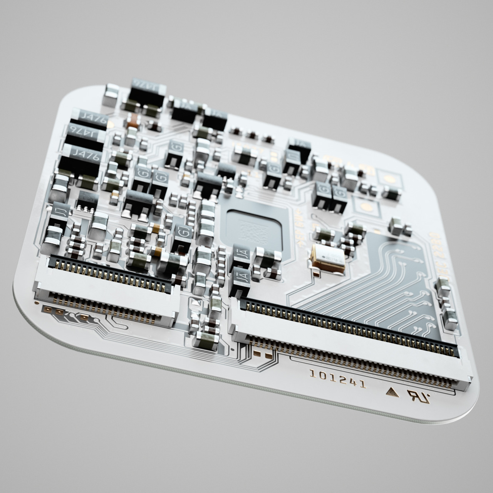
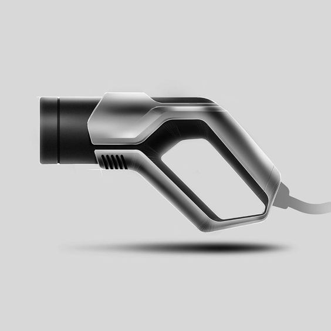
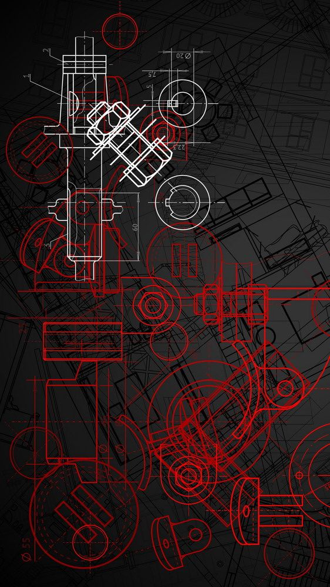
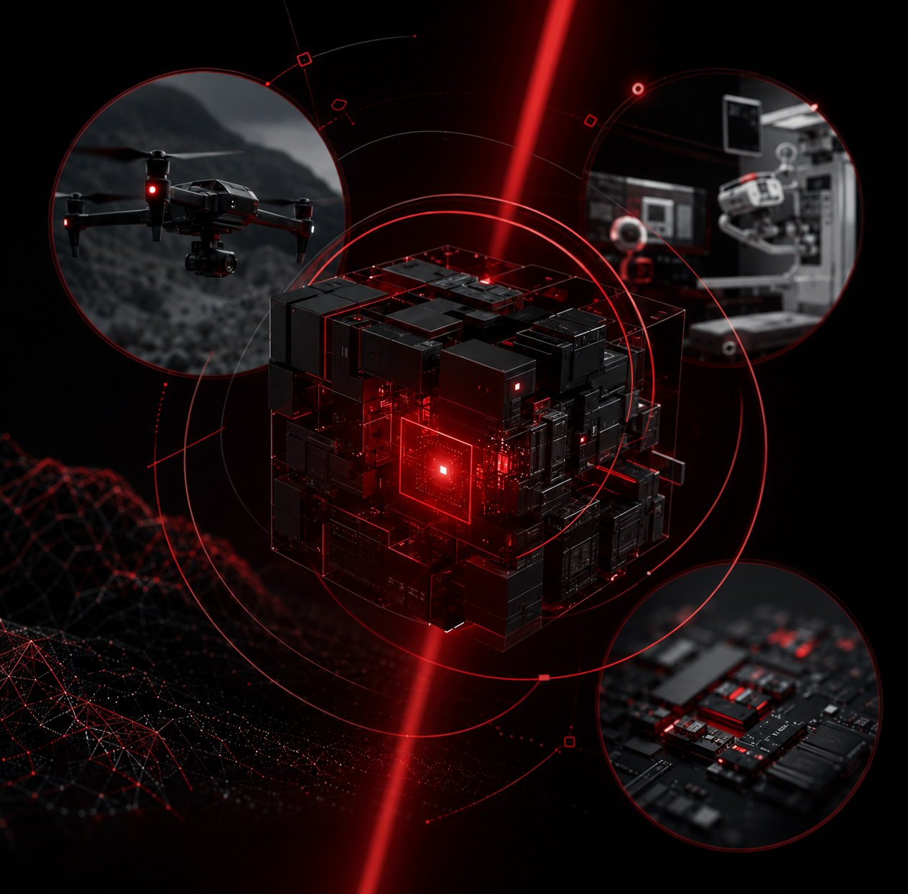
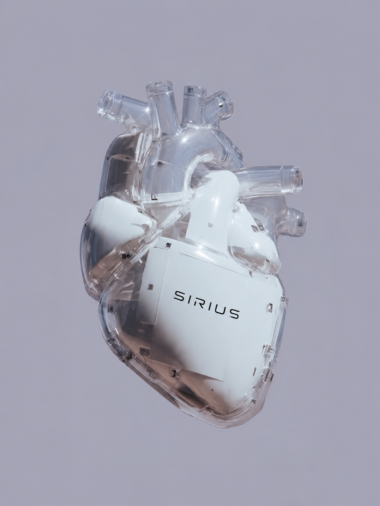
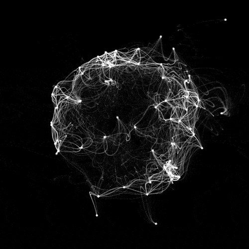

A Sirius Dynamics Technology integra engenharia, hardware, software e inteligência para desenvolver sistemas avançados com visão técnica e aplicação real.
Empresa
0
+
Áreas integradas
0
Visão sistêmica
.webp)





A Sirius Dynamics Technology integra engenharia, hardware, software e inteligência para desenvolver sistemas avançados com visão técnica e aplicação real.

Projetamos arquiteturas técnicas para sistemas críticos e multidisciplinares.

Conectamos plataformas, sensores, controle e inteligência embarcada.

Integramos imagem, dispositivos e software para aplicações em saúde.

Convertemos sinais e dados em percepção, análise e decisão.
Investigação aplicada para orientar decisões e reduzir incertezas.
Modelos técnicos que conectam requisitos, componentes e operação.
Hardware, software, sensores e dados operando de forma coordenada.
Ensaios progressivos para medir desempenho, limites e evolução.
.webp)


Desafios complexos exigem arquitetura, integração e validação. Apresente sua necessidade e converse com nossa equipe.